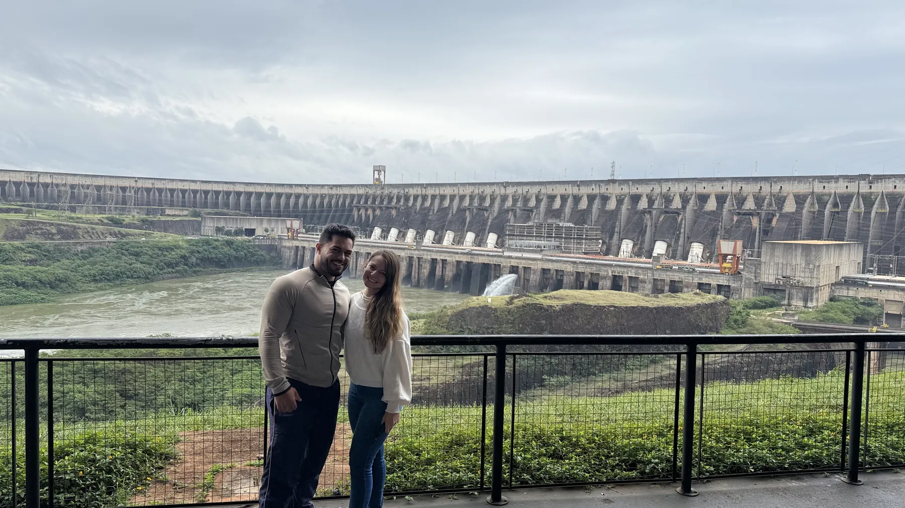
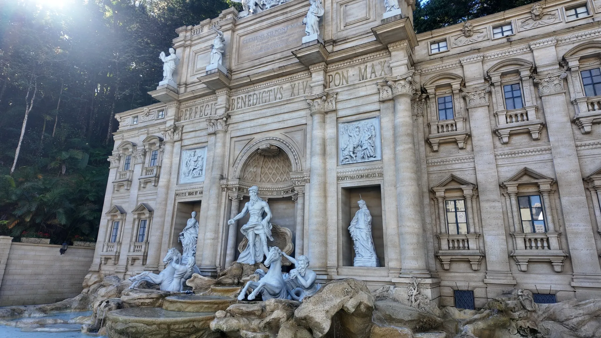

Foz do Iguaçu
Duas das atrações mais visitadas do Brasil, a poucos quilômetros uma da outra.
 YouTube
YouTubeCataratas do Iguaçu
Por que as Cataratas do Iguaçu são inesquecíveis? A gente mostra no vídeo.
- 🎟️ R$ 121 brasileiros · R$ 134 inteira · até 6 anos grátis
- 🕘 Todos os dias, a partir das 9h · compra online com horário

YouTubeItaipu por dentro
Entramos em uma das maiores usinas do mundo e mostramos como é a visita.
- 🎟️ Por dentro (Especial) R$ 185 · Panorâmica R$ 63
- 🕘 Panorâmica todos os dias, 8h15 às 17h · Especial com vagas limitadas

Vai para Foz? Leve o nosso roteiro de 1 dia
Itaipu de manhã, Cataratas à tarde: a ordem que funcionou para nós, quanto gastamos, horários e checklist, em 8 páginas.
QUERO O E-BOOK →Interior de São Paulo
Bate-volta e fins de semana a poucas horas da capital.

YouTubeSerra Negra
Por que esse destino no Circuito das Águas está conquistando todo mundo.
- 🎟️ Passear pelo centro é de graça · algumas atrações são pagas
 YouTube
YouTubeDisneylândia dos Robôs
A Disneylândia mais diferente do Brasil: robôs e engenhocas feitos de sucata.
- 🎟️ R$ 40 adulto · R$ 20 meia · cartão e PIX
- 🕘 Todos os dias exceto terça, 9h30 às 17h30
 YouTube
YouTubePôr do sol no Morro do Fogão
Camping solo e um pôr do sol inesquecível no alto da serra.
- 🎟️ De graça, inclusive para acampar (sem estrutura)
- 🕘 Área aberta · vá no fim da tarde
 YouTube
YouTubeAs águas de Águas de São Pedro
Provamos as famosas águas medicinais. Será que são boas mesmo?
- 🎟️ De graça no Fontanário Municipal, no centro
- 💡 Leve uma garrafinha para encher
Goiás
Águas termais no sul do estado.
Pelo caminho
Alguns momentos dessas viagens.


Mais da estrada
Outras paradas e histórias das nossas viagens.
 YouTube
YouTubeVisitando a Casa de Santiago
Um lugar que você precisa conhecer.
▶ ASSISTIR NO YOUTUBE → YouTube
YouTubeA experiência do Speed Park
Vivemos a experiência do Speed Park. Vale a pena?
▶ ASSISTIR NO YOUTUBE → YouTube
YouTubeSalvando uma jabuti na estrada
Uma parada inesperada no meio da nossa road trip.
▶ ASSISTIR NO YOUTUBE →Valores e horários consultados em outubro de 2026. Eles mudam com frequência: confirme no site oficial de cada lugar antes de ir.